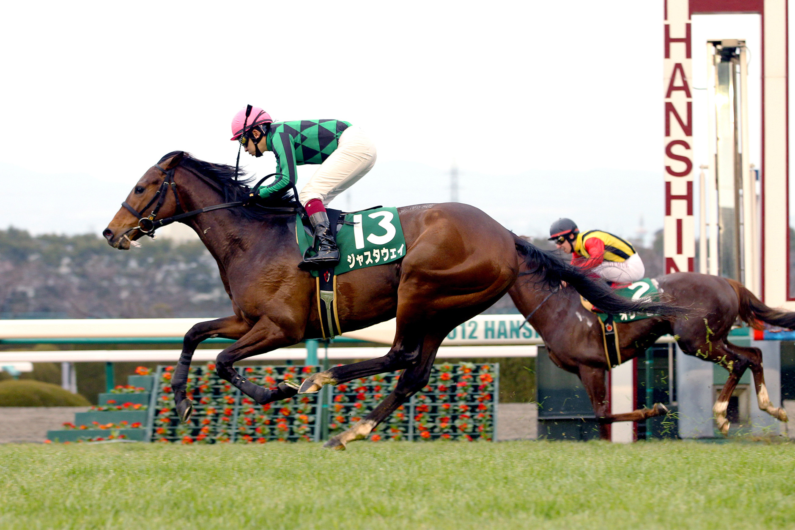

「世界を震撼させた衝撃の加速」2014年世界ランク1位
ジャスタウェイ

2013年の天皇賞・秋で絶対王者ジェンティルドンナを圧倒的な末脚で破ると、翌年のドバイ免税店ターフでは2着に6馬身以上の差をつけるレコード勝ち。日本馬として史上初めて国際競馬統括機関連盟（IFHA）によるワールド・ベスト・レースホース・ランキングで単独1位にランクされた、文字通り「世界最強」の称号を手にした名馬です。
基本データ
- 主な鞍上： 福永祐一
- 獲得賞金： 約5億9540万円
- 通算成績： 22戦6勝
- 脚質： 差し
-
血統（父母）：
- ハーツクライ
- シビル
能力パラメータ
※独自解析による競走能力アーカイブ
全戦績
| 年 | レース名 | 着順 | 着差 | 鞍上 |
|---|---|---|---|---|
| 2011 | 2歳新馬 | 1着 | 5馬身 | 福永祐一 |
| 2011 | 新潟2歳S | 2着 | 0.1秒 | 福永祐一 |
| 2011 | 東スポ杯2歳S | 4着 | 0.4秒 | 後藤浩輝 |
| 2012 | アーリントンC | 1着 | 1/2馬身 | 秋山真一郎 |
| 2012 | ニュージーランドT | 16着 | 1.3秒 | 内田博幸 |
| 2012 | NHKマイルC | 6着 | 0.6秒 | 秋山真一郎 |
| 2012 | 日本ダービー | 11着 | 1.0秒 | 秋山真一郎 |
| 2012 | 毎日王冠 | 2着 | 0.0秒 | 武豊 |
| 2012 | 天皇賞・秋 | 6着 | 0.4秒 | 内田博幸 |
| 2013 | 中山記念 | 8着 | 0.3秒 | 内田博幸 |
| 2013 | 中日新聞杯 | 3着 | 0.0秒 | 福永祐一 |
| 2013 | エプソムC | 2着 | 0.1秒 | 福永祐一 |
| 2013 | 関屋記念 | 2着 | 0.2秒 | 福永祐一 |
| 2013 | 毎日王冠 | 2着 | 0.1秒 | 柴田善臣 |
| 2013 | 天皇賞・秋 | 1着 | 4馬身 | 福永祐一 |
| 2014 | 中山記念 | 1着 | 3 1/2馬身 | 横山典弘 |
| 2014 | ドバイ免税店T(首G1) | 1着 | 6 1/4馬身 | 福永祐一 |
| 2014 | 安田記念 | 1着 | ハナ | 柴田善臣 |
| 2014 | 凱旋門賞(仏G1) | 8着 | - | 福永祐一 |
| 2014 | ジャパンC | 2着 | 4馬身 | 福永祐一 |
| 2014 | 有馬記念 | 4着 | 0.1秒 | 福永祐一 |
伝説の瞬間：世界一へ突き抜けた「覚醒」
覚醒の瞬間は2013年の天皇賞・秋。それまで善戦マンだった彼が、次元の違う末脚で最強牝馬ジェンティルドンナを置き去りにしたシーンは、ファンの度肝を抜きました。その勢いのまま翌年にはドバイで異次元の走りを披露し、日本馬初の「世界ランク1位」という歴史を創出。名前の由来となった「銀魂」のアイテムのように、まさに日本競馬の爆弾として世界を揺るがしました。